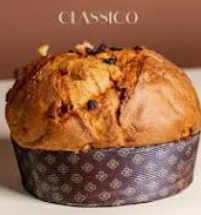

Slice service
8 porzioni
Panettone Classico

Il re delle feste. Ricetta tradizionale con uvetta e canditi, lievitazione naturale. Servito a fetta (1/8) su piatto dessert con posate.
- Taglio: verticale seguendo le 8 linee guida, coltello seghettato lungo
- Porzioni: 8 spicchi uniformi per coerenza
- Presentazione: piatto dessert + cutlery sempre
- Campione visivo: tieni una fetta visibile al banco per stimolare ordini (storytelling visivo)
- Abbinamenti suggeriti: gelato Buontalenti, salsa pistacchio, cioccolata calda
1 - Taglia verticale seguendo le linee guida.
2 - Disponi sul piatto con cutlery.
3 - Offri subito upsell: scoop Buontalenti + sauce o hot chocolate.
Campiona una delle 8 fette per storytelling e conversione vendite.
?? Upselling
Opzione 1: "Fetta + scoop Buontalenti e' il nostro abbinamento signature"
Opzione 2: "Aggiungi salsa pistacchio per contrasto perfetto?"
Opzione 3: "Con cioccolata calda diventa un momento di pura indulgenza"
??? Pro tip: Usa coltello seghettato lungo per taglio netto senza sbriciolare. 8 spicchi uniformi seguendo guida. Esponi fetta campione per stimolare ordini visivi.